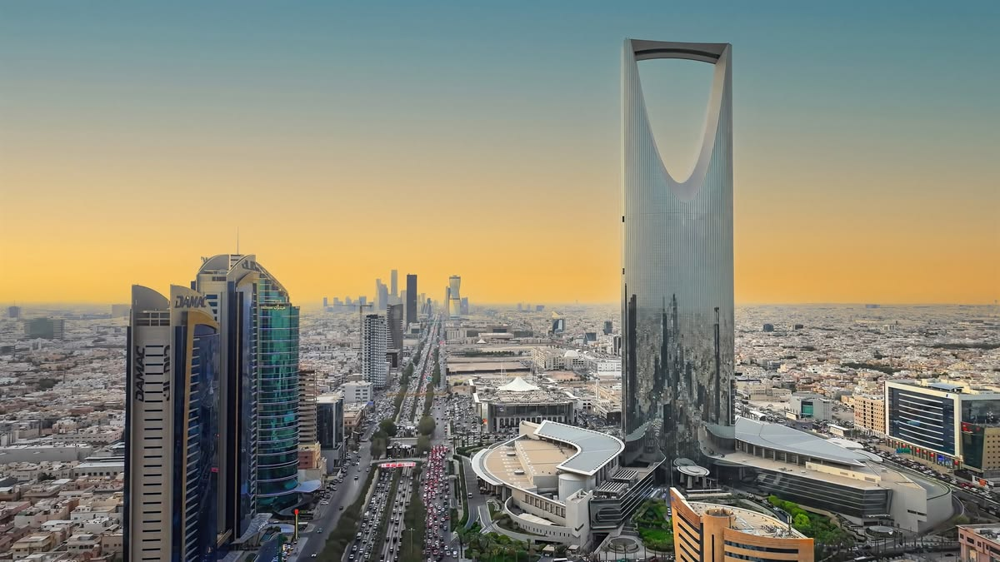
Саудовская Аравия
Страна, где пустыня Руб-эль-Хали соседствует со стеклянными небоскрёбами Эр-Рияда, а древние набатейские гробницы Аль-Улы — с футуристическими проектами будущего.
Саудовская Аравия занимает большую часть Аравийского полуострова — от Красного моря на западе до Персидского залива на востоке. Здесь находятся Мекка и Медина — два самых святых города ислама, куда ежегодно приезжают миллионы паломников. Страна, которая веками жила караванными маршрутами и бедуинскими традициями, за последние десятилетия превратилась в один из крупнейших нефтяных центров мира и сегодня активно строит новые футуристические города в рамках программы «Видение 2030».
Саудовская Аравия на карте мира
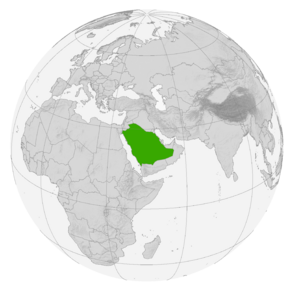
Саудовская Аравия — Ближний Восток, большая часть Аравийского полуострова
Страна без рек: Саудовская Аравия — крупнейшая страна мира, на территории которой нет ни одной реки с постоянным течением. Русла (вади) наполняются водой лишь после редких сезонных дождей.
С кем граничит Саудовская Аравия
У страны больше сухопутных соседей, чем у любого другого государства Аравийского полуострова:
Моря по обе стороны полуострова
Наведи курсор на карточку, чтобы узнать больше о каждом побережье:
Красное море
Западное побережье с одними из самых сохранившихся коралловых рифов планеты
Персидский залив
Восточное побережье — главный маршрут экспорта нефти страны
Руб-эль-Хали
«Пустая четверть» — крупнейшая в мире сплошная песчаная пустыня на юго-востоке страны
Нафуд
Пустыня красных дюн на севере страны, воспетая бедуинской поэзией
Общие сведения
Площадь
2 149 690 км² (13-я в мире)
% водной поверхности
близко к 0 %
Население
~36 000 000 чел. (46-е)
Плотность
17 чел./км²
Столица
Эр-Рияд
Форма правления
Абсолютная монархия
Официальный язык
Арабский
Король
Наследственная должность
Названия жителей
Саудовцы, саудиты
Валовой Внутренний Продукт
На душу населения
~28 000 долл.
Итого
~1,1 трлн
Валюта
саудовский риял (SAR)
Телефонный код
+966
Часовой пояс
UTC+3
Интерактивная карта провинций
Наведи курсор на плитку — появится административный центр провинции и любопытный факт о ней. Кнопки ниже подсвечивают целую макрозону страны.
Наведите курсор на любую плитку карты — здесь появится административный центр провинции и интересный факт о ней.
Один день в Саудовской Аравии
Представьте, что сегодня вы проснулись где-то в Саудовской Аравии. Как может выглядеть ваш идеальный день?
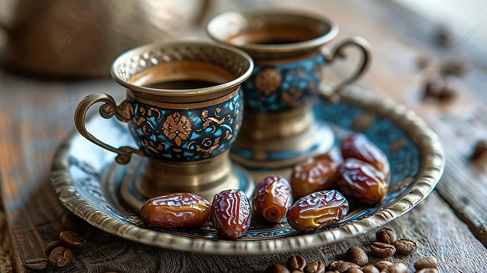
Доброе утро, Эр-Рияд
Начните день с чашки ароматного арабского кофе кахва с кардамоном и сладких фиников — традиционный жест гостеприимства по всей стране.
📍 Эр-Рияд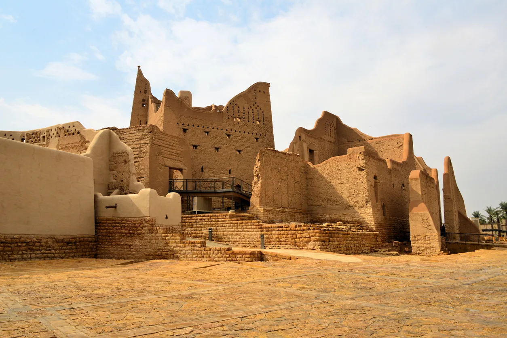
Колыбель королевства
Прогуляйтесь по глинобитным улицам Эд-Дирии — исторической столицы первого саудовского государства, объекта Всемирного наследия ЮНЕСКО.
📍 Эд-Дирия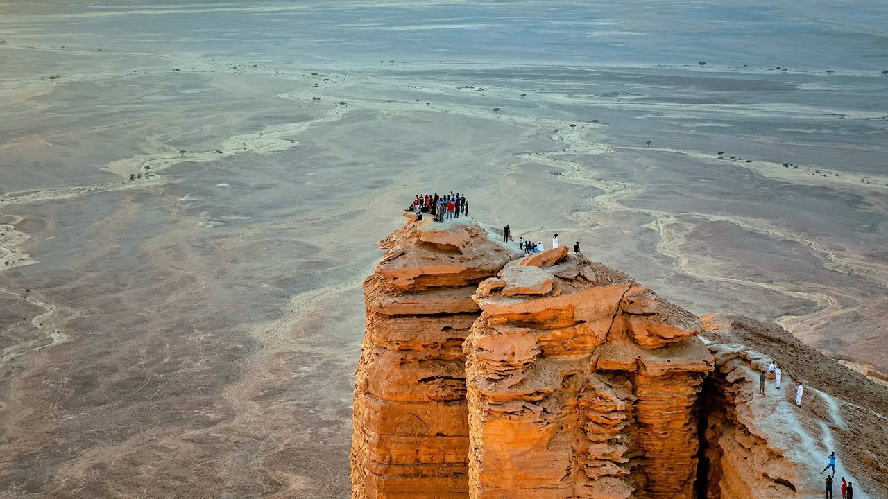
Закат на «Краю света»
Отправляйтесь к обрыву Джебель-Фихрайн неподалёку от Эр-Рияда — эффектному каньону, который местные жители называют «Краем света», встретить закат над пустыней.
📍 Джебель-Фихрайн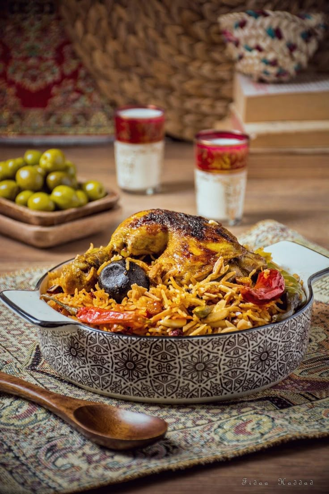
Вечерний ужин
Завершите день блюдом кабса — рис с мясом и пряностями — и, если повезёт застать праздник, традиционным танцем с мечами ардха под барабаны.
📍 Эр-РиядСамые красивые места
 Аль-Ула и Хегра
Аль-Ула и Хегра
Высеченные в скалах набатейские гробницы возрастом свыше 2000 лет — первый объект Всемирного наследия ЮНЕСКО в стране.
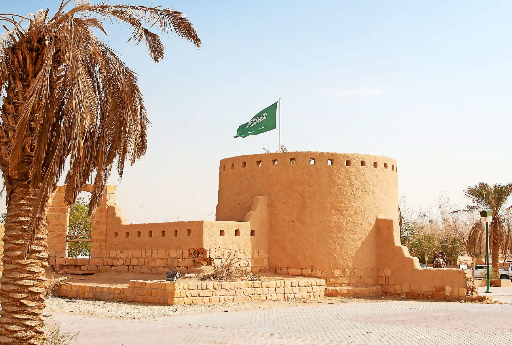
Эд-ДирияИсторическая столица первого саудовского государства с глинобитной архитектурой Неджда.
 Побережье Красного моря
Побережье Красного моря
Одни из наименее тронутых коралловых рифов планеты вдоль западного побережья страны.
 «Край света»
«Край света»
Отвесный обрыв каньона Джебель-Фихрайн, откуда открывается вид на бескрайнюю пустыню.
 Горы Асир
Горы Асир
Прохладные горные террасы вокруг города Абха — регион с самым мягким климатом страны.
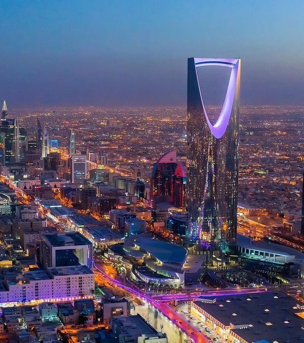
Эр-РиядСтолица, превратившаяся из пустынного форта в мегаполис со стеклянными небоскрёбами вроде Kingdom Centre.
Национальная кухня
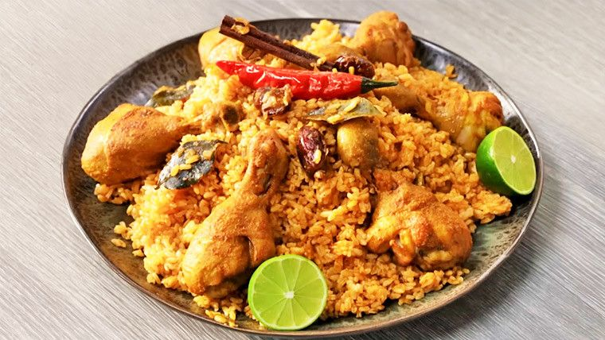
Кабса
Рис с мясом, приправленный шафраном, кардамоном и корицей — главное блюдо страны, которое подают на большом общем подносе для всей семьи или компании.
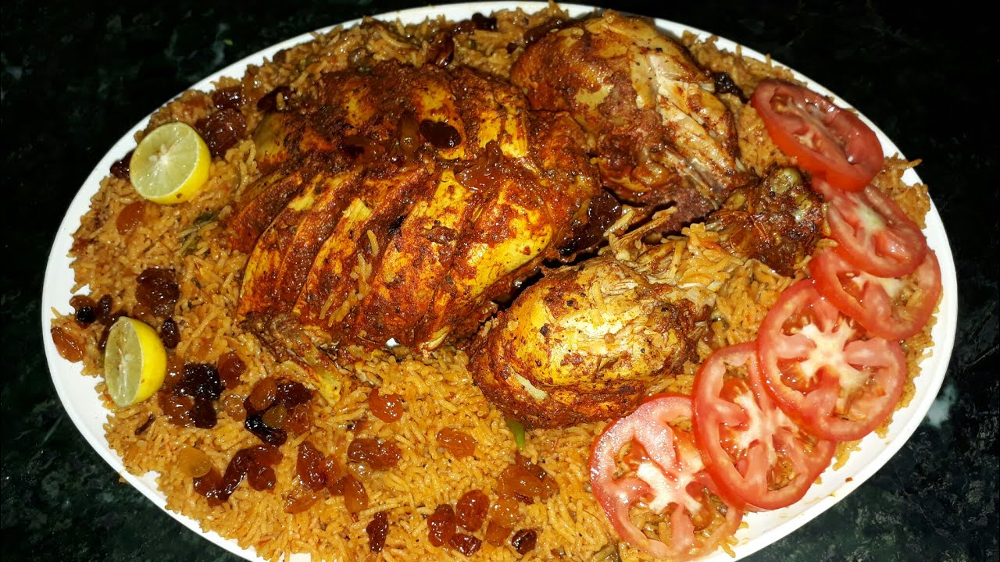
Манди
Рис и мясо, томлённые в вырытой в земле яме над тлеющими углями — блюдо, пришедшее из Йемена и ставшее любимым по всему Аравийскому полуострову.

Арабский кофе и финики
Кахва — light-roast кофе с кардамоном, который подают в маленьких чашках вместе со свежими финиками. Предложить их гостю — древний обычай бедуинского гостеприимства.
Флаг и герб Саудовской Аравии
Символы, за которыми стоит своя история
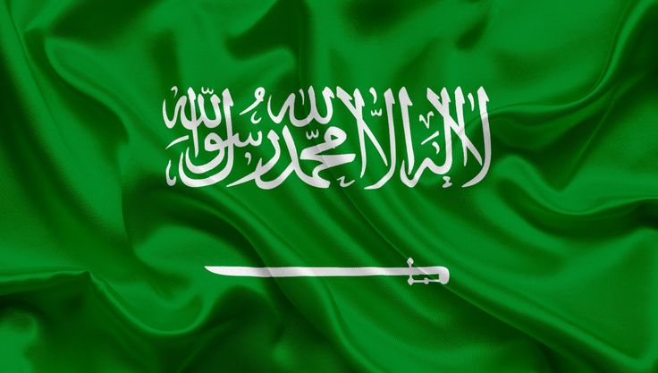
Зелёное полотнище с шахадой и мечом — единственный в мире флаг, несущий на себе текст религиозного вероисповедания
Что означают элементы флага
Наведи курсор на каждую полосу, чтобы узнать её значение:
Зелёный фон
Традиционный цвет ислама, связанный ещё с исламскими знамёнами Средних веков
Шахада
Исламское свидетельство веры, написанное белой арабской вязью — священный текст, который никогда не воспроизводят на сувенирах или ткани, идущей в утиль
Меч
Символ правосудия и военной силы, исторически связан с саблей основателя династии — Мухаммада ибн Сауда
Краткая история государства и флага
- 1727Основано Первое саудовское государство со столицей в Эд-Дирии.
- 1818Первое государство разрушено османско-египетскими войсками.
- 1902Абдул-Азиз ибн Сауд отвоёвывает Эр-Рияд, начиная объединение страны.
- 1932Провозглашено Королевство Саудовская Аравия в его современных границах.
Герб Саудовской Аравии — что зашифровано в символах
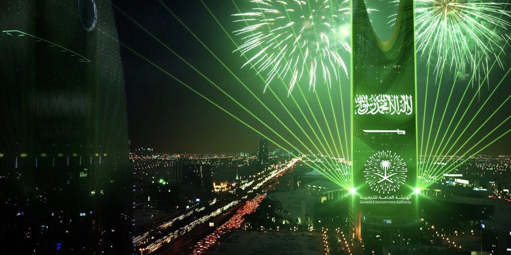
Национальный день 23 сентября — фейерверки и флаги по всей стране в честь объединения королевства в 1932 году.
Государственные праздники
Главный праздник страны — 23 сентября, Национальный день. Отмечается в честь объединения королевства королём Абдул-Азизом в 1932 году — по всей стране проходят фейерверки, концерты и уличные гуляния.
День основания
Founding Day — в честь основания Первого саудовского государства в 1727 году
Национальный день
Главный государственный праздник страны — годовщина объединения королевства
Ид аль-Фитр
Праздник разговения в честь окончания священного месяца Рамадан, дата рассчитывается по лунному календарю
Ид аль-Адха
Праздник жертвоприношения, совпадающий с завершением хаджа — паломничества в Мекку